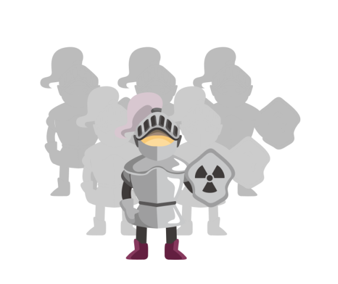
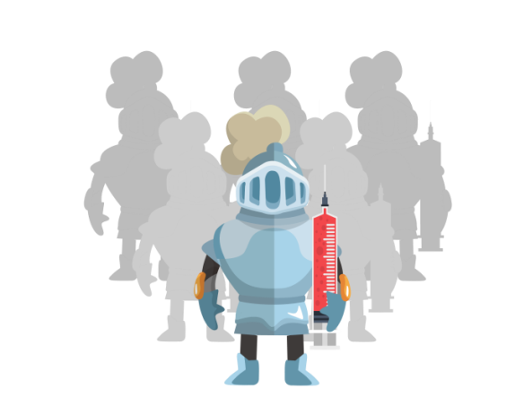
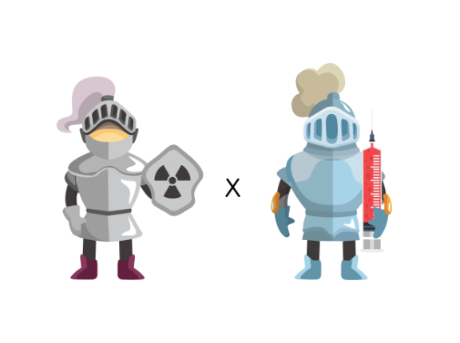

前方高能！一大波抗癌大军来了！
每个少女心中，都会有个盖世英雄，在自己遇到危险时，他会披着金甲圣衣、踩着七彩祥云出现在自己面前。然而，被宫颈癌缠身后才意识到，盖世英雄并不会出现……难道，就只能这样了吗？前方高能，一大波抗癌大军来拯救你了！
首先，是抗癌大军中的先锋部队——手术治疗。它可以将子宫及其周围组织手术切除，主要针对的是早期宫颈癌患者。
紧接着，是抗癌大军中的特种部队——放射治疗。它适用范围广泛，搞不定的任务交给它就好，它可以利用放射线杀死肿瘤细胞，常常在中晚期宫颈癌患者身边可以看到它的身影。

最后，是抗癌大军中的机动部队——化学治疗。什么时候需要它，它就会出现，利用化学药物杀灭肿瘤细胞。

虽然，每个部队有自己不同的职责，在宫颈癌治疗中发挥主要作用的是先锋部队和特种部队。但部队总指挥——医生，也会根据宫颈癌的不同阶段，综合考虑病人的年龄、身体状况，制定合适的治疗作战方案，多部队协同作战，联合起来共同对抗宫颈癌。
先锋部队×机动部队
先锋部队（手术治疗）在出动前，先派遣机动部队（化学治疗）出去探探路，来回巡视几圈，扫除一些障碍，缩小肿瘤体积，为先锋部队（手术治疗）出马创造机会。
先锋部队×特种部队
先锋部队（手术治疗）打完头阵后，再派遣特种部队（放射治疗）出山，可以更好地控制病情，提高治疗效果。有时也可根据肿瘤情况及病人的条件来决定先派遣哪只部队出马。
特种部队×机动部队

特种部队（放射治疗）是整个抗癌大军中的核心力量，对于有淋巴结转移等高危因素的患者，在派出先锋部队（手术治疗）后，还可以派出特种部队（放射治疗）进行疗效巩固。若同时派遣机动部队（化学治疗），可降低再次复发的风险。
如今，我们的抗癌大军日渐丰富，可让患者基于现状病情选择最有效的治疗方案。但部队出征，难免会伤及无辜，产生一些副作用，如果对治疗效果不够满意该怎么办？
首先要积极面对。稳定情绪，充分了解部队武器（治疗药物）和部队作战方式（治疗过程），做好物质和心理上的准备；
其次，要积极沟通。要相信我们的部队总指挥医生，对抗宫颈癌需要大家的共同努力，要积极及时地进行沟通，关注作战过程中可能会出现的各种状况。
最后的最后，虽说我们的抗癌大军很壮大了，但毕竟防胜于治，年轻姑娘们还是趁早做好预防工作，远离宫颈癌哦~
Ref:
1. 中华人民共和国国家卫生和计划生育委员会. 宫颈癌及癌前病变规范化诊疗指南(试行)[J].
2.中国医学前沿杂志（电子版）, 2013, 5(8):40-49.